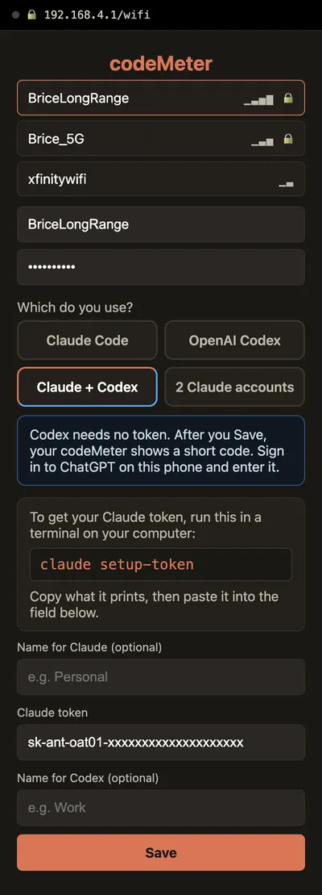

Claude + Codex
Claude and Codex, side by side.
Orange for Claude, blue for Codex. See which one has room before you start the next task.


On the screen
Two services, one glance.
- An orange Claude cardA line for each limit your Claude plan has: Weekly on Pro and Max, Monthly on Team and Enterprise.
- A blue Codex card5-hour and Weekly on ChatGPT Plus, with the reset time and a countdown.
- Percent used on bothOn this screen both sides show percent used, so the bars compare at a glance.
- NamesName each card, up to 10 characters. Blank, they read Claude and Codex.
Screens
Any Claude plan.

Set up
A token, then a code.
- 1Claude token
Run
claude setup-tokenon a computer and copy the token. - 2Pick Claude + Codex
On the setup page pick Claude + Codex, paste the token, add names, choose your Wi-Fi and Save.
- 3Codex code
The device restarts and shows a code. Sign in to ChatGPT on your phone and type it.
The setup page
On your phone.

FAQ
Questions.
Can one codeMeter show Claude and Codex at the same time?
Yes. Pick Claude + Codex on the setup page: a blue Codex card and an orange Claude card, each with a line for every limit that plan has.
What do I need?
A paid Claude plan, a ChatGPT plan with Codex, a computer once for the Claude token, and your phone for the ChatGPT sign-in.
How do I change names or switch setups later?
Hold C about 7 seconds (factory reset; a red RESET screen appears at 5 seconds, keep holding) and set it up again. On this setup, holding B signs in to ChatGPT again; it does not open the setup page.
Does it use my limits?
Codex checks use none. Each Claude check is one tiny request on Anthropic's cheapest model, a negligible slice of your allowance.